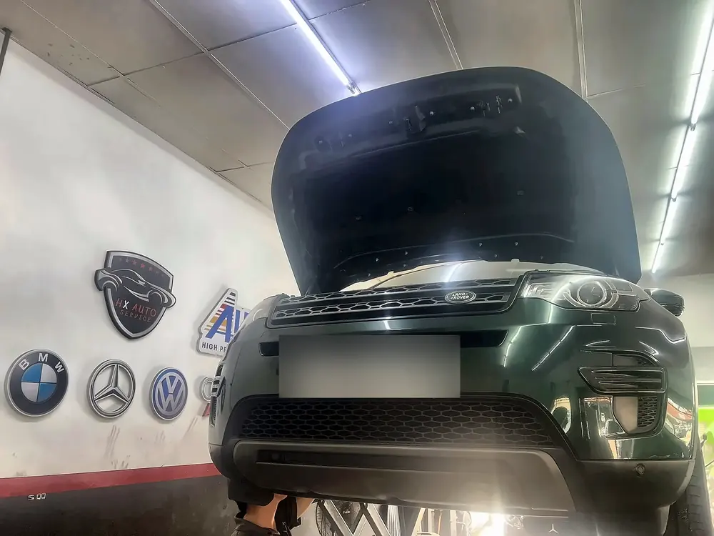

Pemeriksaan bawah kereta
Pemeriksaan bawah kereta di Bukit Indah
Bunyi pelik atau kebocoran dari bawah? Kami periksa bahagian bawah kereta anda, tunjukkan apa yang haus dan terangkan apa yang penting.
Apa yang servis ini liputi
Bahagian bawah kereta anda menanggung banyak hentakan. Ia membawa suspensyen, bahagian stereng, ekzos, aci pemacu, saluran minyak dan brek serta penutup pelindung. Lubang jalan, bonggol, jalan basah dan pemanduan jauh semuanya menghausnya. Banyak kerosakan tak nampak dari atas, jadi masalah tersembunyi sehingga jadi mahal. Pemeriksaan bawah kereta menaikkan kereta supaya kami boleh tengok setiap bahagian dengan betul dan terangkan apa yang kami nampak. Singgahlah ke kami di Taman Bukit Indah, dekat Second Link. Kami melayani pemandu di seluruh Iskandar Puteri dan JB.
Tanda anda perlukan servis ini
- Bunyi dentum atau berkeriuk bila lalu bonggol dan lubang
- Ekzos berbunyi lebih kuat atau berkeriut di bawah
- Minyak, cecair atau air menitis di bawah kereta selepas parkir
- Stereng terasa longgar atau kereta melencong di jalan
- Kereta rendah sebelah atau nampak tak sekata
- Anda baru terlanggar lubang atau bahu jalan dengan kuat
Apa yang kami buat
Periksa bahagian bawah
Kami naikkan kereta dan tengok suspensyen, bahagian stereng, ekzos, aci pemacu, saluran dan penutup.
Terangkan apa yang kami jumpa
Kami tunjukkan apa yang haus, longgar atau bocor dan terangkan mana yang mendesak dan mana yang boleh tunggu.
Sebut harga sebelum kerja
Anda dapat sebut harga untuk sebarang pembaikan. Kami tak mula sehingga anda setuju.
Baiki
Kami tukar atau baiki bahagian yang haus, ketatkan yang longgar dan kukuhkan penutup.
Semak semula dan uji pandu
Kami tengok semula kawasan yang dibaiki, kemudian memandu kereta untuk periksa bunyi dan kawalan.
Serahan
Kami terangkan apa yang dibuat dan apa yang perlu diawasi.
Apa yang termasuk dan apa yang kami periksa
- Penyerap hentak dan spring
- Bush dan control arm
- Ball joint dan tie rod end
- Boot dan sambungan aci pemacu
- Paip ekzos dan mounting
- Kebocoran minyak, cecair dan coolant
- Saluran brek dan minyak
- Penutup bawah dan pengikat
Jenama kereta di bengkel kami
- Land Rover
- Kia
- Nissan
- Mercedes-Benz
- BMW
Daripada gambar kereta di bengkel kami. Nama sahaja, kami bengkel bebas.
Dari bengkel kami
Tak pasti apa masalahnya?
WhatsApp kami apa yang berlaku pada kereta. Harga dan masa bergantung pada kereta, jadi WhatsApp kami untuk sebut harga.
Soalan pemandu
Apakah pemeriksaan bawah kereta?
Ia pemeriksaan visual dan secara langsung pada bahagian di bawah kereta anda, seperti suspensyen, stereng, ekzos dan saluran. Kami cari kehausan, kerosakan, kelonggaran dan kebocoran, kemudian terangkan apa yang kami jumpa. Banyak masalah bermula kecil dan mudah dibaiki awal.
Kenapa kereta saya berdentum bila lalu bonggol?
Bush haus, link longgar, penyerap hentak lemah atau mounting rosak semuanya boleh menyebabkannya. Kami perlu tengok di atas lif untuk tahu yang mana. Kami periksa, terangkan dan sebut harga sebelum sebarang pembaikan. Jangan abaikan bunyi baru.
Berapa kerap saya patut periksa bahagian bawah kereta?
Masa yang sesuai ialah pada setiap servis, dan selepas terlanggar lubang atau bahu jalan dengan kuat. Memandu dalam hujan Johor dan di jalan kasar boleh menghaus bahagian lebih cepat. Kami beritahu apa yang nampak okey. Muatan berat dan jalan banjir juga menambah kehausan.
Boleh saya tahu kalau ada kebocoran di bawah kereta saya?
Lihat kesan tompokan di tanah tempat anda parkir. Minyak gelap, coolant berwarna atau air jernih boleh bermakna perkara berbeza. Air aircond itu normal. Beritahu kami apa yang anda nampak dan kami akan menjejaknya. Jangan abaikan lopak yang asyik muncul semula.
Adakah pemeriksaan ini akan jumpa masalah yang saya tak nampak?
Itulah tujuannya. Banyak bahagian haus hanya kelihatan dari bawah. Kami beritahu apa yang kami nampak, susun mengikut tahap segera dan serahkan keputusan kepada anda. Kami tak akan memaksa kerja yang anda tak perlu.
Berapa kos pemeriksaan bawah kereta?
Sila WhatsApp 011-6776 1138 untuk bertanya tentang pemeriksaan itu. Sebarang pembaikan selepas itu bergantung pada bahagian dan kereta, dan kami sebut harga sebelum mula. Anda yang tentukan apa yang diteruskan.
Servis lain
Cari kami
Satu bengkel di 47 Jalan Indah 16/11, Taman Bukit Indah, dekat Second Link, melayani Iskandar Puteri dan JB.